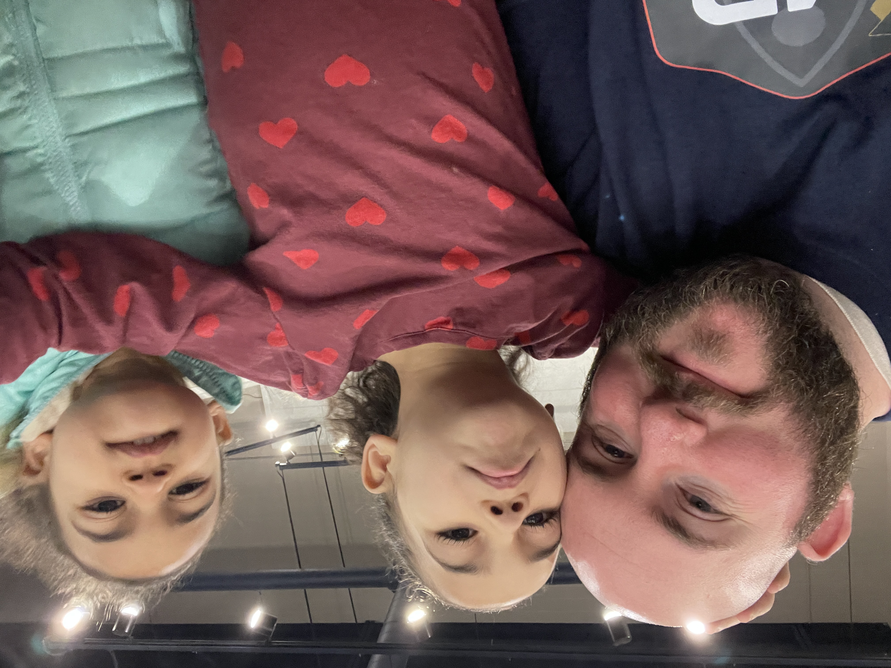

So you want to know a little more about me? You want to know what makes me tick.... what gets my juices
flowing? Well you have come
to the right place. The picture to the left of this dialog is the whole reason I do what I do. I am a family
man! The little queen in the middle is Faith,
she is 6yrs old and the little queen to the right is Hope, and she is 4yrs old. These two are my sour patch
kids.... because well... One second they can be
sour and the next just as sweet as can be.
I am also a Ham Radio Operator. I have my Extra Class license to operate over the air waves with the
Call Sign of W8HA. I have had a passion for radios since
I was a young boy and though not very active on the air waves currently, it is still much a passion of mine
that I have involved my two girls in as well.
Another passion of mine is obviously IT... Computers... Coding... Tinkering with electronics... Breaking
things and fixing them... Finding solutions to problems or finding ways to improve the process or flow...
etc.
Last but definitely not least I love the Word of God and serving His people. I belong to Trinity
Christian Church which is located
in Taylor, MI. We are very diverse congregation who flow under an Apostolic Anointing and believe in the
Trinity (The Father, the Son, and the Holy Spirit).